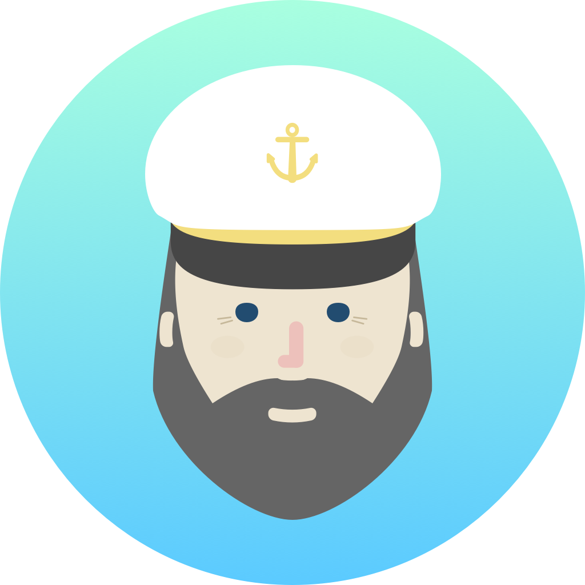

Kapitan: Generic templated configuration management for Kubernetes, Terraform and other things

Kapitan is a tool to manage complex deployments using jsonnet, kadet (alpha) and jinja2.
Use Kapitan to manage your Kubernetes manifests, your documentation, your Terraform configuration or even simplify your scripts.
Community
- Main Blog, articles and tutorials: Kapitan Blog
- Slack
#kapitan - Website
https://kapitan.dev - London Meetup Group London Kapitan Meetup
How is it different from Helm? Please look at our FAQ!

Table of Contents
- Main Features
- Quickstart
- Example
- Documentation
- Kapitan feature proposals
- Contributing
- Credits
- FAQ
- Related projects
Main Features
- Use the Inventory as the single source of truth to tie together deployments, resources and documentation. based on reclass
- Use Jsonnet or Kadet (alpha) to create json/yaml based configurations (e.g. Kubernetes, Terraform);
- Use Jinja2 to create text based templates for scripts and documentation;
- Manage secrets with GPG, AWS KMS or gCloud KMS and define who can access them, without compromising collaboration with other users.
- Create dynamically generated documentation about a single deployment (i.e. ad-hoc instructions) or all deployments at once (i.e. global state of deployments)
Quickstart
Docker (recommended)
docker run -t --rm -v $(pwd):/src:delegated deepmind/kapitan -h
On Linux you can add -u $(id -u) to docker run to preserve file permissions.
For CI/CD usage, check out CI.md
Pip
Kapitan needs Python 3.6.
Install Python 3.6:
- Linux:
sudo apt-get update && sudo apt-get install -y python3.6-dev python3-pip python3-yaml - Mac:
brew install python3 libyaml
Install Kapitan:
User ($HOME/.local/lib/python3.6/bin on Linux or $HOME/Library/Python/3.6/bin on macOS):
pip3 install --user --upgrade kapitan
System-wide (not recommended):
sudo pip3 install --upgrade kapitan
Example
The example below compiles 2 targets inside the examples/kubernetes folder.
Each target represents a different namespace in a minikube cluster.
These targets generate the following resources:
- Kubernetes
Namespacefor the targets - Kubernetes
StatefulSetfor ElasticSearch Master node - Kubernetes
StatefulSetfor ElasticSearch Client node - Kubernetes
StatefulSetfor ElasticSearch Data node - Kubernetes
Serviceto expose ElasticSearch discovery port - Kubernetes
Serviceto expose ElasticSearch service port - Kubernetes
StatefulSetfor MySQL - Kubernetes
Serviceto expose MySQL service port - Kubernetes
Secretfor MySQL credentials - Scripts to configure kubectl context to control the targets and helpers to apply/delete objects.
- Documentation
$ cd examples/kubernetes
$ kapitan compile
Compiled minikube-mysql
Compiled minikube-es
Documentation
Getting Started
Kapitan features
Miscellaneous
Credits
FAQ
Why do we prefer Kapitan to Helm?
Before developing Kapitan, we turned to Helm in an attempt to improve our old Jinja based templating system.
We quickly discovered that Helm did not fit well with our workflow, for the following reasons (which were true at the time of the evaluation):
* Helm uses Go templates to define Kubernetes (yaml) manifests. We were already unsatisfied by using Jinja and we did not see a huge improvement from our previous system, the main reason being: YAML files are not suitable to be managed by text templating frameworks.
* Helm does not have a solution for sharing values across charts, if not through subcharts. We wanted to be able to have one single place to define all values for all our templates. Sharing data between charts felt awkward and complicated.
* Helm is component/chart based. We wanted to have something that would treat all our deployments as a whole.
* We did not fancy the dependency on the tiller.
In short, we feel Helm is trying to be apt-get for Kubernetes charts, while we are trying to take you further than that.
Why do I need Kapitan?
With Kapitan, we worked to de-compose several problems that most of the other solutions are treating as one.
1) Kubernetes manifests: We like the jsonnet approach of using json as the working language. Jsonnet allows us to use inheritance and composition, and hide complexity at higher levels.
2) Configuration files: Most solutions will assume this problem is solved somewhere else. We feel Jinja (or your template engine of choice) have the upper hand here.
3) Hierarchical inventory: This is the feature that sets us apart from other solutions. We use the inventory (based on reclass) to define variables and properties that can be reused across different projects/deployments. This allows us to limit repetition, but also to define a nicer interface with developers (or CI tools) which will only need to understand YAML to operate changes.
4) Secrets: We manage most of our secrets with kapitan using the GPG, Google Cloud KMS and AWS KMS integrations. Keys can be setup per class, per target or shared so you can easily and flexibly manage access per environment. They can also be dynamically generated on compilation, if you don't feel like generating random passwords or RSA private keys, and they can be referenced in the inventory like any other variables. We have plans to support other providers such as Vault, in addition to GPG, Google Cloud KMS and AWS KMS.
5) Canned scripts: We treat scripts as text templates, so that we can craft pre-canned scripts for the specific target we are working on. This can be used for instance to define scripts that setup clusters, contexts or allow running kubectl with all the correct settings. Most other solutions require you to define contexts and call kubectl with the correct settings. We take care of that for you. Less ambiguity, less mistakes.
6) Documentation: We also use templates to create documentation for the targets we deploy. Documentation lived alongside everything else and it is treated as a first class citizen. We feel most other solutions are pushing the limits of their capacity in order to provide for the above problems. Helm treats everything as a text template, while jsonnet tries to do everything as json. We believe that these approaches can be blended in a powerful new way, glued together by the inventory.
Related projects
- sublime-jsonnet-syntax - Jsonnet syntax highlighting for Sublime Text
- language-jsonnet - Jsonnet syntax highlighting for Atom
- vim-jsonnet - Jsonnet plugin for Vim (requires a vim plugin manager)